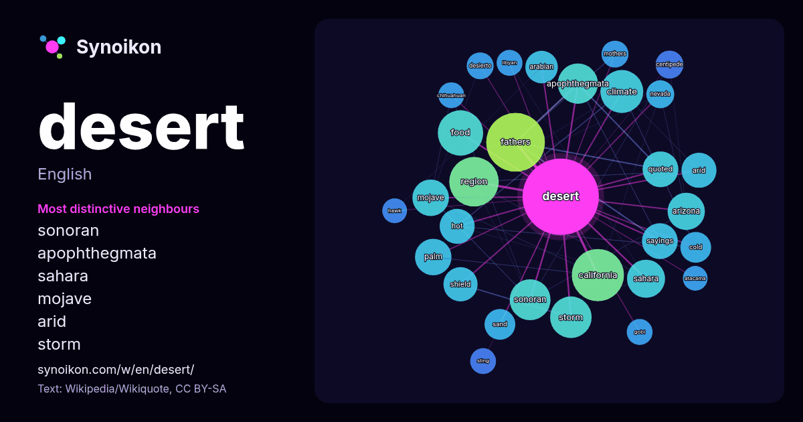

English · word of the day list
desert
The words found around it in 1752 instances from Wikipedia, Wikiquote, Hacker News.

Most distinctive neighbours
- sonoran 31×
- apophthegmata 30×
- sahara 26×
- mojave 25×
- arid 22×
- storm 22×
- fathers 22×
- quoted 22×
- palm 21×
- climate 21×
- california 21×
- food 20×
- arizona 20×
- shield 19×
- arabian 19×
- sayings 15×
- hot 15×
- centipede 15×
- sand 15×
- desierto 14×
× = how many times more often than in general Wikipedia text.
Most frequent neighbours
- fathers 62
- california 49
- region 44
- located 42
- food 37
- area 35
- film 34
- climate 33
- american 32
- storm 31
- sonoran 30
- western 30
- apophthegmata 29
- north 26
- sahara 26
- arizona 25
- world 25
- high 24
- mojave 24
- palm 24
In context
- A desert is a landscape where little precipitation occurs and, consequently, living conditions create unique biomes and ecosystems. The lack of vegetation Wikipedia snippets · Desert
- The Mojave Desert (/moʊˈhɑːvi, mə-/ ; Mohave: Hayikwiir Mat'aar; Spanish: Desierto de Mojave) is a desert in the rain shadow of the southern Sierra Nevada Wikipedia snippets · Mojave Desert
- Désert may refer to: "Désert" (Émilie Simon song), 2002 Desert (novel) (French: Désert), a 1980 novel Wikipedia snippets · Désert
- /səˈhɛrə/) is a desert spanning North Africa. With an area of 9,200,000 square kilometres (3,600,000 sq mi), it is the largest hot desert in the world and Wikipedia snippets · Sahara
- two phases: Operation Desert Shield, which marked the military buildup from August 1990 to January 1991; and Operation Desert Storm, from the bombing Wikipedia snippets · Gulf War
- The Gobi Desert is a large, cold desert and grassland region in southern Mongolia and North China. It is the sixth-largest desert in the world. The name Wikipedia snippets · Gobi Desert
- The Thar Desert (Rajasthani pronunciation: [t̪ʰaːɾ]), also known as the Great Indian Desert, is an arid region in the north-western part of the Indian Wikipedia snippets · Thar Desert
- High desert or High Desert may refer to the following: High Desert, Albuquerque, New Mexico, a development in Albuquerque, New Mexico, United States High Wikipedia snippets · High desert
More words
- art
- autumn
- bell
- bread
- bridge
- cat
- city
- climate
- clock
- death
- dog
- family
- food
- forest
- garden
- god
- gold
- health
- heart
- history
- honey
- horse
- island
- language
- life
- map
- mirror
- money
- mother
- mountain
- nature
- power
- rain
- road
- salt
- science
- shadow
- silence
- song
- star
- storm
- summer
- tea
- time
- train
- truth
- water
- winter
- work
Precomputed on 2026-10-09 with default settings (±5 words, medium corpus). The interactive map can refresh it with live data.